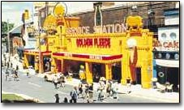

Sydney is the gateway city to Australia, home to the world’s most beautiful harbour and was host to the 2000
Olympic Games.
Sydney is the gateway city to Australia, home to the world’s most beautiful harbour and was host to the 2000
Olympic Games.Sydney is the largest city in Australia with a population of 22,000 in central Sydney and 4 million people in greater Sydney.
Sydney will leave you with not a minute spare during your stay between visiting the many unique cultural activities, innovative restaurants, world renowed shopping and of course the spectacular Sydney Harbour and Opera House.
The people are friendly, the air is clean and it is one of the safest cities in the world.
Things to do and see
1. Climb the Harbour Bridge!
No doubt you have often marvelled at the stunning Sydney Harbour Bridge for its sheer
size and architectural wonder. Now you have the chance not only to walk over it and touch
it, but to climb it! This is a once in a lifetime opportunity, one that you should not
pass up. Bookings can be made through the Bridgeclimb web site.
limbing the bridge!">
2. Visit The Rocks!
The historic site of Sydney's first European settlement, The Rocks contains many beautifully restored buildings from Sydney's early days as a colonial town. Explore the maze of original, cobblestone lanes that lead to a range of shops, cafes and restaurants. The shopping ranges from Australian design in fashion, art, craft and jewellery to unique collectables and souvenirs. More information can be obtained from the
NSW Tourism Web Site.
3. See Fox Studios in Australia!
Fox Studios is Sydney's most vibrant and
colourful meeting place, within the setting of a
real working movie studio. As you wander along the curved streets you'll catch the best
in entertainment shopping and dining. All about you is the buzz of urban culture and
entertainment. Eating, Shopping, Movies or just having a coffee - it's all here.

Tourist Services
1. General Information and services.
NSW Tourism Web Site.
2. Accommodation specialising in European Travellers.
Bed and Breakfast Services.
3. Limousine, Coach Tours and Airport Shuttle.
Sydney ARTS Tours.
4. Harley Davidson motorbike tours of Sydney.
Rolling Thunder Motorcycle Tours.
5. Car Rental Services.
Budget Rent A Car.
6. Language Translation Services.
German Translation Online.
| Monthly avg. Temp (C) | Monthly avg. Clear Days | Monthly avg. Rainfall (mm) |
|---|---|---|
| 22.1 | 8.5 | 92.1 |